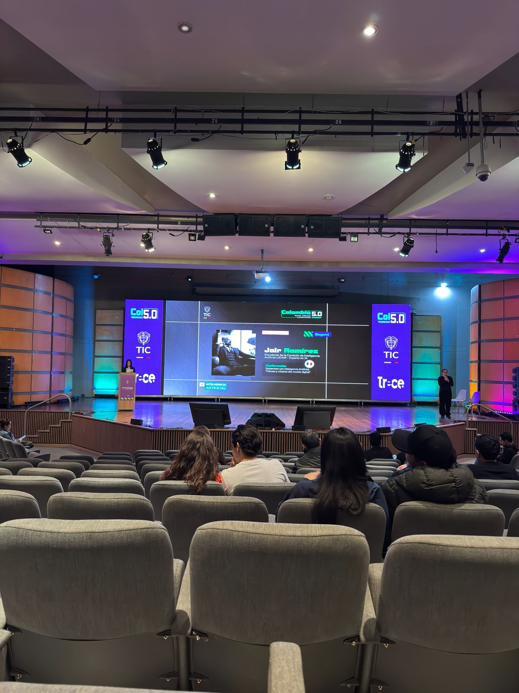

// Sobre el Evento
Donde Colombia
mira hacia adelante
Where Colombia
looks forward
Colombia 5.0 no es simplemente una feria tecnológica. Es una declaración. Organizado por el Ministerio TIC en alianza con Tr-ce, el evento se desplegó en los amplios pasillos y auditorios de Corferias, Bogotá, convocando a miles de ciudadanos, emprendedores, estudiantes y profesionales del sector tecnológico bajo un mismo propósito: imaginar y construir el futuro digital de Colombia.
Desde el primer momento en que uno cruza las puertas del pabellón, la atmósfera lo dice todo. Pantallas gigantes con gráficas neón en morado y verde, stands interactivos, el zumbido constante de conversaciones apasionadas y el aroma inconfundible de algo que está por comenzar. El lema del evento —"Acceso, soberanía y productividad"— no era un slogan vacío; era una filosofía que se respiraba en cada rincón.
La apuesta de Colombia 5.0 era clara: no hablar de tecnología solo para los expertos, sino democratizarla. Hacerla accesible para el ciudadano de a pie, para el joven que aún no sabe que podría convertirse en el próximo gran desarrollador colombiano, para la emprendedora que necesita herramientas digitales para escalar su negocio. El evento fue un puente tendido entre el presente y el mañana.
Y eso es exactamente lo que se vivió: un día donde el futuro no se contemplaba desde lejos, sino que se tocaba con las manos, se debatía en voz alta y se construía colectivamente. Un hito en la historia tecnológica del país.

